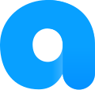

Angelring
선생님 한 명이 아이 네 명을 돌보는 현장에서,
선생님·아이·보호자 모두가 안심할 수 있는 앱을 만들었습니다.
기획서 없이 시작한 프로젝트에서 클라이언트와 공동 기획하며 IA와 유저 플로우를 설계하고, UIUX와 브랜딩, QA까지 참여했습니다.

한 명의 선생님,
네 명의 아이
발달장애 아동을 돌보는 전문 시설에서는 선생님 한 명이 아이 네 명을 관리합니다.
일손은 늘 부족하고, 보호자는 아이와 떨어져 있는 시간 내내 걱정합니다.
Angelring은 아이가 착용하는 웨어러블 기기와 앱을 연결해, 선생님과 아이, 보호자 세 사람이 같은 정보를 보고 같은 속도로 대응하도록 돕는 서비스입니다.
PNG · SVG, 투명 배경
일손이 부족한 환경에서 모든 아이를 동시에 살펴야 합니다.
PNG · SVG, 투명 배경
적응하는 동안 곁에서 도와줄 사람과 안정적인 환경이 필요합니다.
PNG · SVG, 투명 배경
아이가 지금 어디에서 어떤 상태인지 알고 싶어 합니다.
기획서 없이 시작해,
출시까지
구체적인 기획서 없이 시작한 프로젝트였습니다. 클라이언트와 상담을 거듭하며 서비스 방향과 타깃, 기능을 함께 기획했고, 그 결과를 바탕으로 디자인을 진행했습니다.
핵심 사용 흐름을 먼저 그린 뒤, 그 위에서 내비게이션 구조와 화면을 설계했습니다. 디자인 이후에도 개발 단계에 맞춰 QA에 참여했습니다.
클라이언트와 상담하며 서비스 방향·타깃·기능을 공동 기획하고, IA와 유저 플로우를 설계했습니다.
브랜딩, 디자인 시스템, 핵심 화면의 UIUX를 만들었습니다.
개발 단계에 맞춰 화면 명세를 전달하고 구현 내용을 확인했습니다.
출시 전 QA에 참여하고, 앱 출시에 필요한 자료를 준비했습니다.
쉽고, 믿을 수 있고,
다정하게
사용자 니즈에서 세 가지 핵심 가치를 정하고, 각 가치를 서비스의 핵심 기능으로 이어 붙였습니다.
PC 560 × 448px (5:4)
PNG · WebP
PC 560 × 448px (5:4)
PNG · WebP
PC 560 × 448px (5:4)
PNG · WebP
아이를 감싸는 링
아이를 보호한다는 서비스의 목표를 링(Ring) 형태로 옮겼습니다.
알파벳의 둥근 형태에 신뢰와 안심의 이미지를 담았습니다.
컬러는 신뢰를 상징하는 파랑 계열로 정하고, 친절한 인상을 위해 UI 전반에 원형과 라운드 shape를 사용했습니다.
브랜드를 컴포넌트로
브랜딩에서 정한 색, 폰트, 라운드 값, 그래픽 스타일을 컴포넌트에 그대로 적용해 화면마다 같은 인상을 주도록 했습니다.
PC 1024 × 576px (16:9)
PNG · WebP
PC 1024 × 576px (16:9)
PNG · WebP
PC 1024 × 576px (16:9)
PNG · WebP
PC 1024 × 576px (16:9)
PNG · WebP
PC 1024 × 576px (16:9)
PNG · WebP
PC 1024 × 576px (16:9)
PNG · WebP
확인하고, 대응하고,
함께 기록합니다
선생님과 보호자가 가장 자주 하는 일은 아이의 상태를 확인하고 필요하면 바로 움직이는 것입니다. 화면도 그 순서로 구성했습니다.
아이의 상태를 한눈에 확인하고 바로 대응합니다
홈에서는 담당하는 모든 아이의 상태를 카드로 모아 보여주고, 주의가 필요한 아이를 곧바로 알아볼 수 있게 했습니다.
네 가지 상태를 직관적으로 구분합니다
기기 연결 상태에 따라 카드의 모습을 달리해, 글을 읽지 않아도 지금 어떤 상태인지 알 수 있게 했습니다.
끊긴 이유까지 알려줍니다
연결이 끊겼을 때 보호자가 같은 알림에 불안해하지 않도록 상황을 네 가지로 나누어 전달합니다.
돌봄에 참여하는 사람과 시간을 한곳에서 봅니다
보호자와 담당 선생님을 확인하고, 아이를 관리하는 요일과 시간을 체크할 수 있습니다.
언제 어디서든 아이의 위치를 확인합니다
보호자가 가장 알고 싶어 하는 정보인 위치를 지도에서 바로 확인할 수 있게 했습니다.
선생님과 부모가 아이의 하루를 함께 기록합니다
하루의 모습을 선생님과 부모가 함께 남기고 공유해, 돌봄이 끊기지 않고 이어지도록 했습니다.
처음 출시해 본 앱
앱을 출시하는 과정은 이번이 처음이라 모든 단계가 새로웠고, 그만큼 많이 배운 프로젝트였습니다.
기획부터 디자인, 개발, QA, 출시까지 이어지는 흐름을 처음부터 끝까지 경험하며 각 단계가 서로 어떻게 맞물리는지 배웠습니다.
앱 아이콘만 해도 한 장이 아니라 여러 사이즈로 준비해야 했습니다. 화면 밖에서 디자이너가 챙겨야 할 것이 많다는 것을 알게 되었습니다.
클라이언트의 요구사항에 기반해 진행된 프로젝트였습니다. 주어진 요구를 서비스의 흐름과 화면으로 풀어내는 데 집중했습니다.
출시가 끝이 아니라, 운영과 데이터를 바탕으로 서비스를 개선해 가는 과정에 관심을 갖게 해준 첫 프로젝트입니다.
Other projects